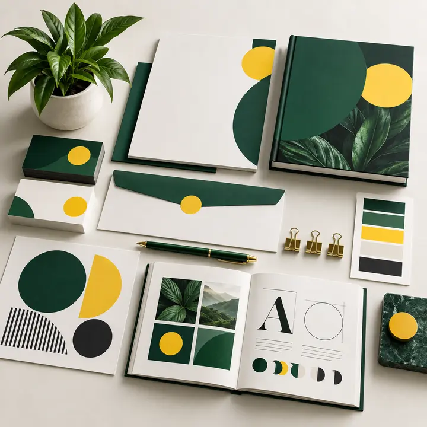
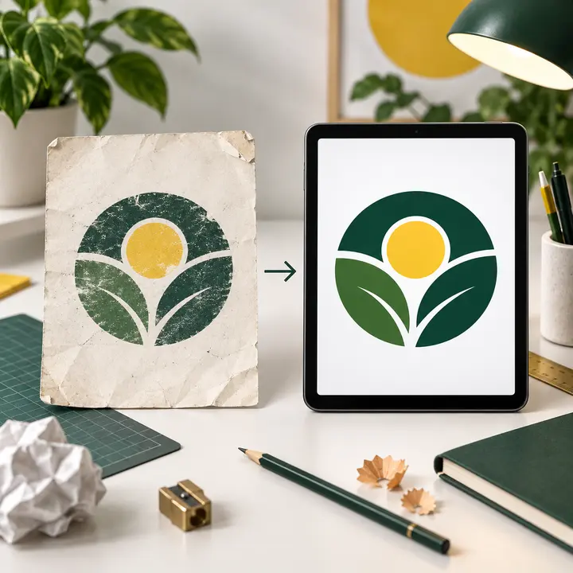
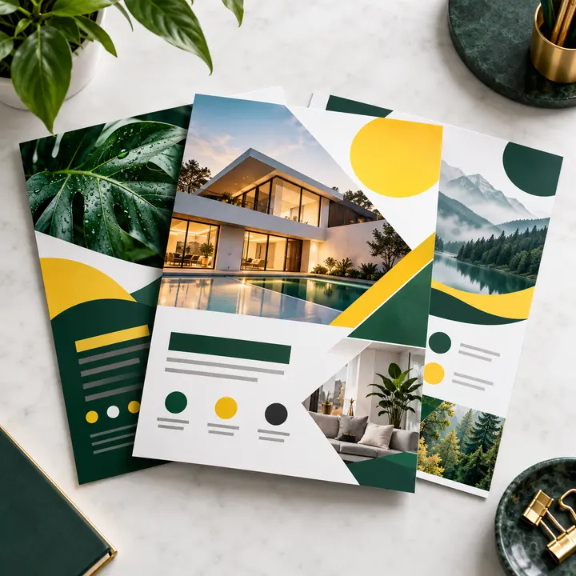
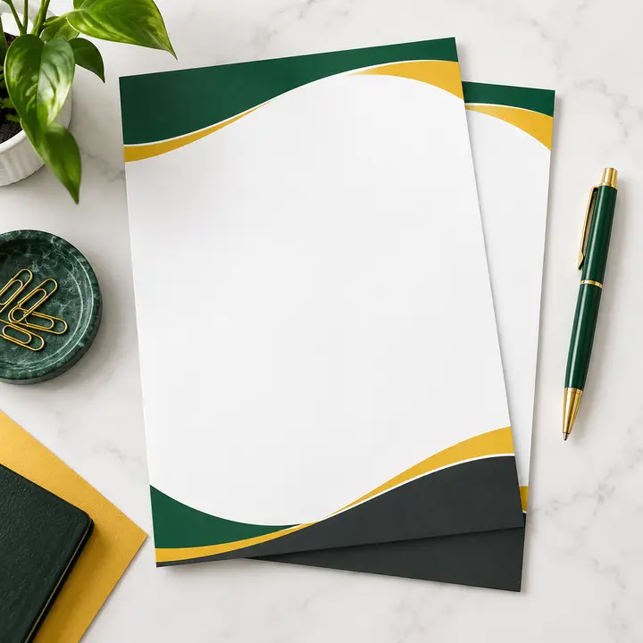
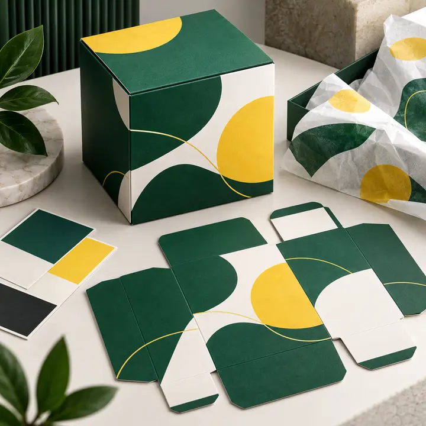

Ariyalur · அரியலூர்
A building-material supplier’s product sheet and a second project example, plus a brief checklist and district-specific questions.
Blog / Tamil Nadu district guides
Choose your district for a separate article about selecting a graphic designer, preparing a brief and checking the final artwork. Each guide includes different project examples and practical questions.
Sai Graphic Designs has its physical studio in Madurai. Projects from other districts can be handled online; these pages do not represent separate branch offices.
Start with Best Graphic Designer in Tamil Nadu: How to Choose for the statewide comparison checklist.
A building-material supplier’s product sheet and a second project example, plus a brief checklist and district-specific questions.
An apartment launch brochure and a second project example, plus a brief checklist and district-specific questions.

A startup’s brand launch kit and a second project example, plus a brief checklist and district-specific questions.

An equipment manufacturer’s catalog and a second project example, plus a brief checklist and district-specific questions.

A food brand’s pouch label and a second project example, plus a brief checklist and district-specific questions.

A fresh-produce supplier’s carton identity and a second project example, plus a brief checklist and district-specific questions.
A restaurant’s menu system and a second project example, plus a brief checklist and district-specific questions.

A fabric collection’s lookbook and a second project example, plus a brief checklist and district-specific questions.
A new shop’s opening campaign and a second project example, plus a brief checklist and district-specific questions.
A clothing retailer’s collection catalog and a second project example, plus a brief checklist and district-specific questions.
A guesthouse’s visitor information kit and a second project example, plus a brief checklist and district-specific questions.

A home-textile supplier’s buyer presentation and a second project example, plus a brief checklist and district-specific questions.
A component supplier’s capability profile and a second project example, plus a brief checklist and district-specific questions.

A coordinated business stationery project and a second project example, plus a brief checklist and district-specific questions.

A community event’s information campaign and a second project example, plus a brief checklist and district-specific questions.
A packaged-product label with variable data and a second project example, plus a brief checklist and district-specific questions.
A logistics company’s company profile and a second project example, plus a brief checklist and district-specific questions.
A stay property’s welcome guide and a second project example, plus a brief checklist and district-specific questions.
A coaching center’s course comparison sheet and a second project example, plus a brief checklist and district-specific questions.
A maker’s product story card and a second project example, plus a brief checklist and district-specific questions.
A travel service’s booking handout and a second project example, plus a brief checklist and district-specific questions.
A supplier’s product specification brochure and a second project example, plus a brief checklist and district-specific questions.
A multi-product retailer’s offer catalog and a second project example, plus a brief checklist and district-specific questions.
A catering service’s package leaflet and a second project example, plus a brief checklist and district-specific questions.
A stay or tour business’s seasonal brochure and a second project example, plus a brief checklist and district-specific questions.
A cultural event’s program booklet and a second project example, plus a brief checklist and district-specific questions.
A grower brand’s product range sheet and a second project example, plus a brief checklist and district-specific questions.
An export-facing company profile and a second project example, plus a brief checklist and district-specific questions.

An engineering service’s capability presentation and a second project example, plus a brief checklist and district-specific questions.
A packaged snack brand’s label family and a second project example, plus a brief checklist and district-specific questions.
A furniture seller’s collection booklet and a second project example, plus a brief checklist and district-specific questions.
An apparel brand’s label and hangtag system and a second project example, plus a brief checklist and district-specific questions.
A B2B supplier’s sales introduction and a second project example, plus a brief checklist and district-specific questions.
A retreat organizer’s visitor brochure and a second project example, plus a brief checklist and district-specific questions.
A music event’s poster and program set and a second project example, plus a brief checklist and district-specific questions.
A clinic’s patient information leaflet and a second project example, plus a brief checklist and district-specific questions.
A training provider’s enrollment brochure and a second project example, plus a brief checklist and district-specific questions.
A printed-product brand’s packaging set and a second project example, plus a brief checklist and district-specific questions.
District names were checked against the Government of Tamil Nadu District Portal. The project examples in our articles are illustrative briefs, not descriptions of district industries or completed client projects.